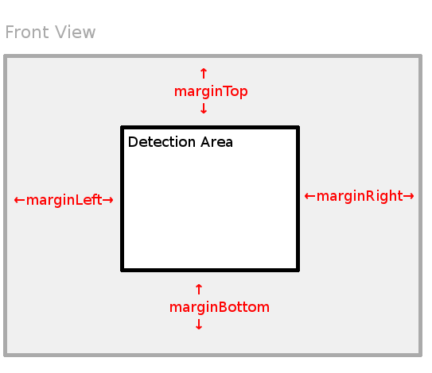
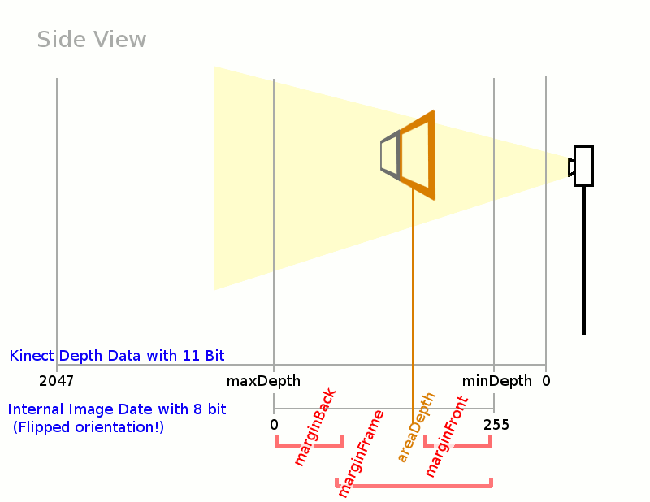

Only available if program was started with --display web option.
Calibration
Note that the raw depth values (0-2048) will be flipped: 255=close points, 0=distant points.
- Set Depth Range
- Select raw depth view (press '1')
- Raise minDepth till first obstacles are light grey.
- Lower maxDepth till background is nearly black.
- Use margin[Left|Top|Right|Bottom] to crop image.
- Select front mask image
- Select frame mask view (press '5')
- Raise marginFront till the frame is white and all other parts still black.
This black/white-image will used to find the 'holes' of your frame. Ensure that the areas are full enclosed.
- Use marginBack to set the minimal background threshold (depth mask) for blob detection.
Press '2' to show the depth mask. This global threshold will increased pixelwise in two cases:
- During the depth mask creation on startup (and configuration changes) by all obstacles.
(Roughly depthMask = max(sensordata, 255-marginBack)). Thus, do not block the camera during initialisation.
- If the option areaThresh is enabled, the depth mask inside an area depends by its border pixel distances.
- Save Configuration
Area Detection
If the calibration was finished (mask view looks feasible and blob view do not react on tiny, undesired disturbances) you can start the area detection.
Click on Start Area Detection, place behind the frame, and push a hand in the first area. Select more areas and finish area detection with an second push into area 1.
Refit
Use this option to repeat the area detection. It search areas nearby the saved midpoints.
Load/Save Masks
If you want remove the frame after the setup you can click on Save mask. This creates two images ({Configname}_[depth|area].png), which will be loaded at startup and reconstruct the previous depth filter and area definition. Remove this files to restore the normal startup behaviour.
Variables Description
minBlobArea, maxBlobArea: Filter small and tall blobs out.
TUIO_2Dcur : Send tuio messages in 2Dcur format
TUIO_25Dblb : Send tuio messages in 25Dblb format (like Space Palette).
areaThresh : Use depth of the frame to filter hand movement behind the frame.
directFiltering: Skip depthFrame evaluation to avoid some memcpy. (For ARM, Slower on x86.)

